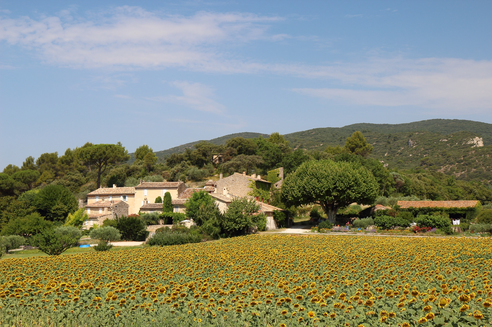
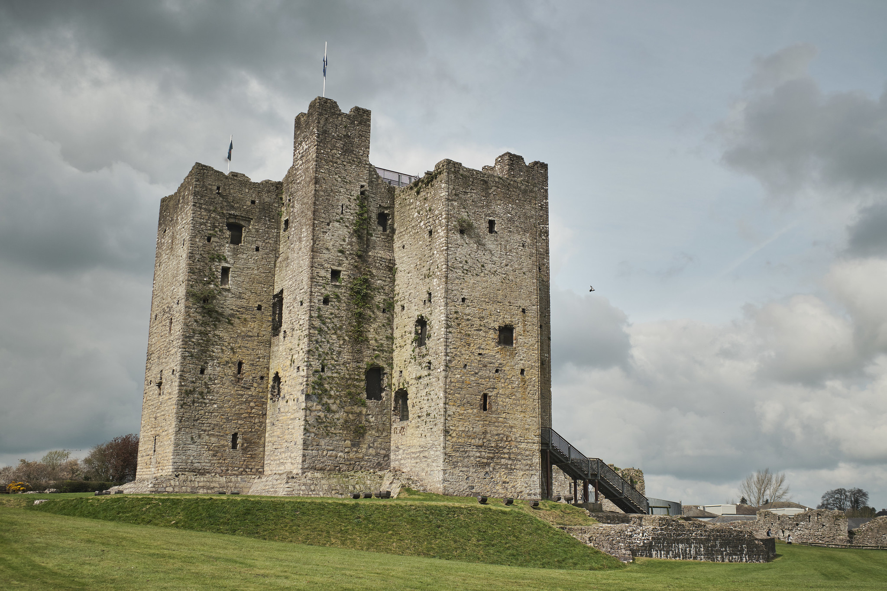
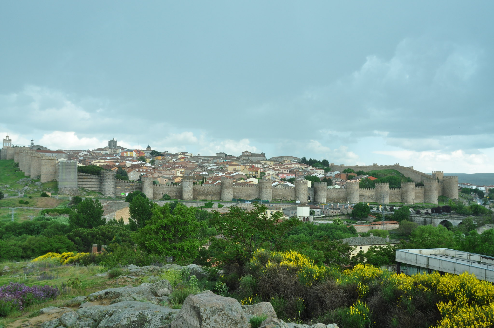

Welcome to Discover Europe!
If you are planning a trip to Europe, but need some help with your itinerary or have questions about lodging, transportation and attractions you’ve come to the right place.
To help you sort through endless Web sites, brochures and those scraps of paper you have with flight times and prices scribbled on them, let Discover Europe be your one-stop trip planner. We’re here to meet your travel needs and make your European vacation one to remember forever.
Our Agents
Our travel agents do more than give advice on destinations and arrange car rentals, flights, hotels and tours—they also advise on tourist attractions, weather, customs, safety, language, and exchange rates.
And, unlike most travel agencies, our agents have traveled to Europe many times and know the countries, culture, and destinations quite well. They are experienced travelers and have your best interests in mind.
Our agents have connections and contacts in Europe who can help you on your journeys and consult a variety of travel books and Internet sources for legitimate information on hotels, restaurants, and hot spots.
Specialties
What makes us unique is our dedication to our clients and knowledge of European travel. Our licensed, professional agents keep track of feedback from other travelers, cleanliness of the hotels and restaurants and personal travel experiences. Our international agents visit travel locations in Europe and report back to us with testimonials and travel advice.
Our travel agents do NOT receive commission payments from any airlines, hotels, or cruise lines. They will arrange a reasonable rate with you for their assistance and will work with your best interests in mind.
Our travel agents specialize in travel to certain regions or for groups of people such as college friends, honeymooners, families, or ethnic groups.
Discover Europe…it has some amazing attractions just waiting for you to visit.
England

Don’t be fooled by what you learned in school–England isn’t just about Romeo and Juliet, dry lists of names in history books, and musty castles. Today’s traveler will find England to be a charming, fascinating destination, full of picturesque towns, trendy clubs, and, of course, plenty of history. And, if that wasn’t enough, English cuisine is undergoing a revival–London boasts an array of chic new restaurants.
The most famous of all picturesque English villages is Stratford-upon-Avon; the home of William Shakespeare. However, there are many other English villages well worth the traveler’s time.
The town of Bath, well-known to Jane Austen fans, boasts unique architecture and a relaxing atmosphere. Fond of the tales of Robin Hood? Then visit Nottinghamshire, where the famous tales of derring-do were set.
For travelers not so enamored of quaint villages, the wonderful capital city of London has everything a modern traveler could want – grand museums, impressive theatre, old-fashioned pubs, and plenty of exciting clubs. London has many historical landmarks such as the Tower of London, the reconstructed Globe Theater, and Buckingham Palace – and, of course, if you get tired of walking, take a break to admire the famous Crown Jewels!
CITIES IN ENGLAND


France
Bonjour! France is one of the most cultured and elegant places in the world–a place where old-fashioned buildings exist peacefully with new structures.
It’s a place for thinkers to discuss the finer points of life at little cafés, and a place where the simple acts of cooking and eating have been made into art forms. Paris, the “City of Light,” has many elegant and world-famous attractions.
You’ll be amazed by the beauty of Notre-Dame, the Arc d’Triomphe, and of course, the Eiffel Tower. Be sure, of course, to visit the world-famous Louvre, where artistic treasures--Mona Lisa and the Venus de Milo--are on exhibit. End the day with dinner at a classy restaurant and enjoy the best of French cuisine.
While the city of Paris is a must-see, be sure not to miss the rest of France! The countryside and old-fashioned villages of France are quite charming. Larger cities such as Cannes and Lyon all have many fascinating sights and visits to them can be very rewarding. As for the countryside, where many French dream of living one day, it is simply gorgeous and enjoyable to travel through.
CITIES IN FRANCE


Germany

Germany is a very good choice for the English-speaking traveler, since many Germans speak English and American influences such as fast food and casual clothing are widespread!
Germany is a fascinating country steeped in history, where you can find authentic recreations of medieval times, wonderful museums, and traditional festivals such as the famous Oktoberfest.
Germany is famous for its castles and palaces. At many of them, you will find medieval times painstakingly restored, with traditional dancing, entertainment, and even medieval food. Culture is found in the charming old cities of Germany as well. Enjoy many museums and beautifully designed churches, famous landmarks of classical cities–also, musical forms such as opera are very popular in Germany.
German food is hearty and very traditional, and of course consumed with famous, authentic German beer. German beer, of course, is fascinating in its own right–there are even festivals devoted to it, ranging from the popular Oktoberfest to smaller, more intimate festivals in other towns. Festivals and other traditions are very popular–Germans celebrate more holidays than Americans, and there always seems to be something going on!
CITIES IN GERMANY


Ireland
Ireland is a very popular vacation destination due to its natural beauty and fascinating culture. The rustic and friendly atmosphere, combined with many fascinating destinations such as castles and villages, make Ireland a wonderful place for travelers.
Ireland has many interesting and historic locations for travelers to visit, such as the Blarney Castle and various ruined structures, charming seaside villages, and, of course, authentic Irish pubs. History buffs won’t want to miss Trinity College, Ireland’s oldest college, where the famous Book of Kells is on display. Literature fans may want to visit the very pubs where famous Irish writers such as Oscar Wilde and James Joyce spent their time. Music fans may be interested in the Irish Music Hall of Fame and other music-related attractions.
The many churches in Ireland are awe-inspiring, while the many parks and natural spaces are simply beautiful. There are many art galleries as well as talented local artisans.
CITIES IN IRELAND


Italy

If beautiful works of art and architecture interest you, Italy is one of the best destinations in the world. Full of culture, lush locations and rich in history, Italy has many treasures to be enjoyed by the American traveler.
Enjoy the artifacts housed in the vast museums and the famous and impressive monuments. According to UNESCO (the cultural branch of the United Nations), Italy contains about two thirds of the world’s artistic heritage. Famous works by gifted Italian artists such as Michelangelo can be seen in the many Italian museums.
And of course, where else but Italy can you find authentic and delicious Italian cuisine?
Music is also a cherished form of art in Italy–throughout the year, there are concerts and festivals held everywhere. Many festivals are based on religious holidays or medieval events–at one point during the year, there is even a reconstruction of a 16th century soccer game!
But the art and culture is not the only thing Italy is famous for – it is also a wonderful place to dine out and relax. The spas and hot springs of Italy are unparalleled.
Since the Roman age, the waters of Italy have been used to cure all sorts of ailments and complaints, from metabolism disorders to rheumatism. Italian food, already so popular in America, is unparalleled in its home state–the fresh ingredients and the simple cooking techniques make Italian food more delicious in Italy than anywhere else in the world.
CITIES IN ITALY


Scotland
Scotland, part of the United Kingdom and home to the fabled Loch Ness Monster, is often overshadowed by its neighbor England. However, it is a very exquisite and fascinating area that boasts its own cuisine, traditions and folklore. Its capital city, Edinburgh, is the second most popular tourist destination in Britain.
The natural scenery of Scotland is breathtakingly beautiful. The atmosphere is rugged and wild, boasting beautiful cliffs and waterfalls as well as pristine lakes and hills. Scotland has a rich history, and everything is connected to it – battlefields and historical points of interest are very common.
Scottish food as a whole is very hearty and traditional, and Scottish whisky is very popular. As for entertainment, traditional dancing is widespread. A Ceilidh (pronounced kay-lay) is an informal night of singing, dancing, eating and drinking. Festivals, and other events are also popular–Halloween originated in Scotland, for example.
CITIES IN SCOTLAND


Spain
Looking for a fresh, exciting country to visit? Consider Spain, a country full of culture and history. Enjoy beautiful music and dancing at one of the festivals or carnivals, watch the art of bullfighting, or spend your time at one of the many fantastic beaches. Spain is one of the more exotic European countries in terms of culture and food.
Spain boasts many cheerful and colorful festivals, great spectacles that differ from region to region. All Spanish cities such as Madrid and Barcelona have their own regional customs and traditions, as well as their own favorite foods. In Barcelona, for example, you can enjoy dishes such as La escudella i carn d'olla, a sort of stew made of vegetables, rice, noodles and potatoes, and the Postre del Musico, the “Musician’s Dessert.”
The entertainment in Spain, however, is not limited to traditional activities such as flamenco dancing and bullfighting – there is a very active night life populated by young people and visitors from all over the world. Residents of Valencia call the time between Friday evening and Sunday morning “la movida” – the moving time – and spend it accordingly, hanging out at the hottest bars and restaurants, enjoying music and dance, constantly on the move.
CITIES IN SPAIN


Sweden
Sweden is a country rich in history and culture. Its mythology is fascinating, its cities are picturesque and its many forests and parks are fantastic and unspoiled. It is a pure, natural place–you can go to Stockholm, Sweden’s capital, and catch salmon in the middle of the city!
Sweden’s greatest treasure for nature-lovers is its vast expanse of beautiful land. More than half of Sweden is covered by forests, and Sweden’s long shoreline is dotted with breathtaking archipelagos. Fishing and hunting are both very popular sports, and both are part of Swedish traditions. Swedish land operates under a rather unique rule – “The Right Of Public Access”–which allows anyone to use public land.
Since Sweden was isolated from other European countries, its culture (and the culture of the countries around it) is much different from other European countries. Swedish art is influenced by folk art and handcrafts. Products such as furniture and woodcrafting show the same sort of clean design. Other arts such as theater and ballet are very popular in Sweden.
CITIES IN SWEDEN


Contact Us
We're here to answer any questions you may have about your travel plans. Just fill out the information below and a Discover Europe travel expert will be in touch with you shortly. If there is something we can help you with right away, call 800-555-5555.